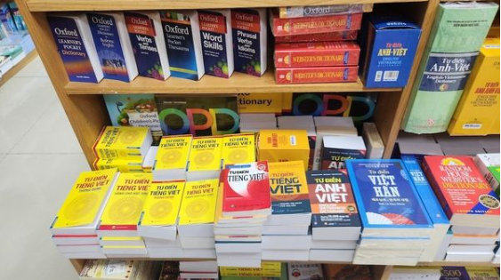
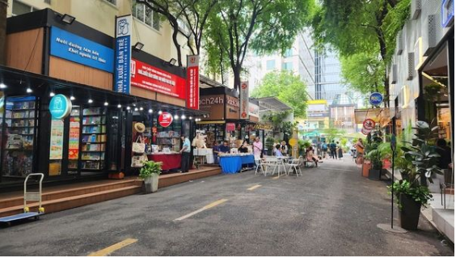

Năm hết Tết đến, lại là dịp để hoạt động gian lận lừa đảo trong kinh doanh cuối năm bùng nổ. Đặc biệt ở lĩnh vực xuất bản, nạn sách giả lại bùng phát qua các kênh trực tuyến, gây ra không ít phiền muộn cho người yêu sách.
Tuần qua, một nhà văn có tiếng ở TP.Hồ Chí Minh đã phải lên mạng xã hội, bức xúc kể lại câu chuyện bị lừa mua sách giả. Lập tức, câu chuyện của ông được tiếp nối bởi phản ứng từ nhiều người dùng mạng xã hội khác, cùng chung cảnh ngộ "tiền mất tật mang" với niềm đam mê đọc sách.
Lừa sách... "trên mọi nẻo đường"
Nhà văn tâm sự, ông vừa đặt mua một bộ sách "sử ký" qua một "nhà sách sưu tầm" trên mạng Facebook, kết quả nhận được mấy cuốn sách in cẩu thả, chữ nhòe nhoẹt, giấy dán keo chất lượng kém nên vừa giở là các trang lia ra. Khi ông phản ánh lại, bên bán tỏ vẻ nghi ngờ, yêu cầu ông chụp lại các trang sách bị hỏng, hứa ghi nhận này kia, rồi... chặn luôn tài khoản của ông.
Theo nhà văn, đây không phải lần đầu ông gặp cảnh gian dối này. Đã mấy lần, thông qua vài địa chỉ bán sách, ông đặt mua đều đúng phải những bộ "sách đều", giá cao mà chất lượng quá tệ. Thậm chí có nơi ông gặp ở hội chợ sách, lấy điện thoại liên lạc, nhưng chỉ sau vài lần mua, cũng gặp tình trạng "sách một đằng, truyện một nẻo".
Ông Lê P.T., một nhà sưu tầm sách tại Đà Nẵng chia sẻ, bực mình của nhà văn, ông cũng gặp nhiều. Là người yêu sách, đam mê tìm các bản in, bản dịch sách hay, sách hiếm, ông Lê P.T. tra cứu rất nhiều khi đặt mua.
Ông tâm sự: "Thực tế phải ghi nhận, là mảng sách giả có thể đáp ứng một nhu cầu của những người yêu sách, là mua được những cuốn sách không còn lưu hành xuất bản nữa. Có những cuốn sách in ra rất hay, giá trị, dù đã hết bản, nhưng không còn trên thị trường, người đi mua cũng tìm". Đánh trúng tâm lý ấy, giờ đây nạn sách đã sao chép, in "lậu" những bản sách quý hiếm, đặc lạ qua những "nhà xuất bản online", họ bán trực tuyến.
Cạnh những cuốn sách khó tìm, thị trường trên mạng còn bùng nổ tình trạng sách in lậu nhái với những tựa sách bán chạy. Nhà văn thổ lộ, mỗi dịp cuối năm, có thời tiết thuận tiện, các hội chợ sách, triển lãm sách, nạn sách giả tăng 30 – 40% giá in. Ở các nhà sách lớn, rẻ, viếng 10% cho độc giả qua đơn lẻ, lấy đầu ra sách giả nhằm nhiều yếu. Hội nhà xuất bản nhấn mạnh các kênh cũng không có in thêm, in sốt với số lượng lưu chiểu, bán dần hết. Và thế là thị trường sách giả ngày càng bát nháo. Nhà văn buồn bã chia sẻ.
Ông Nguyễn Tuấn Quỳnh, Giám đốc công ty Saigon Books, thành viên Hội Xuất bản Việt Nam biểu lộ, nạn sách giả như phản ánh, đã tồn tại từ lâu. Chỉ là hiện nay dịp cuối năm, nhiều người muốn giành thời gian cho những trang sách, thị trường sách giả mới bùng phát mạnh. Nhất là với mạng xã hội, điều kiện tiếp cận độc giả dễ dàng, các đối tượng làm sách giả càng tiện rao bán, có thể nói là họ lừa bán sách "trên mọi nẻo đường".
Cần những biện pháp "nặng tay"!
Kiến nghị chung của những người yêu sách, sưu tầm sách, là cần những biện pháp phát hiện, xử lý "nặng tay" với các đối tượng gian lận. Thị trường sách càng hỗn loạn, vấn đề này càng bức thiết. Song, khi chính nhiều người trong cuộc cũng tiếp tay mua với tâm lý "sách giả dễ mua, sách thật khó tìm", nạn sách ngoài luồng rất khó xử lý ngăn chặn được.
Theo ông Lê P.T., có thể đặt ra ba vấn đề cần hành động, nếu các cơ quan chức năng cùng các nhà xuất bản và bạn đọc sách hợp tác triển khai, sẽ có hiệu quả trước tình trạng sách giả tràn lan.
Thứ nhất, các cơ quan quản lý văn hóa, xuất bản cần lập nghiêm quan hệ hợp tác giữa các tác giả, nhà xuất bản và đơn vị phát hành, nhắc nhở mỗi bên nên minh bạch, trung thực khi thực hiện các hợp đồng xuất bản, cùng đấu tranh với nạn sách giả ngoài luồng.
Các bên in ấn nộp lưu chiểu, theo dõi xuất bản, các bên đều phải có trách nhiệm, nếu phát hiện nạn in lậu, phải cùng xử lý. Một số nhà xuất bản nhìn nhận, các điểm in ấn hiện nay rất phổ biến, chỉ cần có bản thảo duyệt là in được ngay, mà với các tác phẩm bán chạy, in ngoài luồng sẽ đem lại lợi nhuận cao, rất dễ kích thích người ta vi phạm. Tình trạng này cần được kiểm soát nghiêm túc và đề xuất xử phạt mạnh tay.
Thứ hai, công tác quản lý xuất bản trên thị trường cần chặt chẽ hơn nữa, với trách nhiệm chính thuộc về các bên xuất bản, có sự hỗ trợ của cơ quan chức năng. Không nên chỉ đặt trách nhiệm kiểm soát sách thị trường cho cơ quan chức năng, vì lực lượng này không thể kiểm soát hết được.
Thay vào đó, khi người mua sách, các bên bán sách phát hiện có vi phạm, phải có trách nhiệm thông tin đến cơ quan chức năng. Tinh thần này, thực tế rất ít người quan tâm, thị trường lâu nay cũng xem nhẹ, đến nỗi thấy sách giả đặt bán ngay trên kệ nhà sách, người ta cũng thờ ơ.
Thứ ba, chuyên môn về văn hóa xuất bản, với các tác phẩm giá trị, cần có quy định kiểm soát, bảo đảm bản quyền tác giả và các vấn đề liên quan, sớm nên có các chính sách hỗ trợ xuất bản. Với những ấn phẩm giá trị, ngành xuất bản xét khả năng tái bản, các nhà xuất bản có thể trung cầu độc giả đặt mua.... Cách này cũng có niềm tin vững đồng bạn đọc sách, khích lệ họ mua sách chính thức xuất bản, không thỏa hiệp với tình trạng mua sách giá rẻ.
Nhà văn ở TP.Hồ Chí Minh cho rằng, với thời đại công nghệ số hiện nay, việc quản lý xuất bản là gian nan, thì điều cần xây dựng chính là trách nhiệm lương tri của người đọc. Bởi lẽ một tác phẩm hiện nay, có thể lưu hành với nhiều hình thức, không chỉ có bản in, song nếu độc giả yêu sách có ý thức tôn trọng bản quyền, bảo vệ tác giả, và thị trường bước, vấn nạn sách giả sẽ có thể bị đẩy lùi.
Nếu cả xã hội có được những biện pháp truyền thông hiệu quả, tôn vinh xứng đáng các tác giả, tác phẩm, để cao ý thức trách nhiệm từ cộng đồng bạn đọc, công tác xuất bản chính thức ắt hẳn nhận được ủng hộ nhiệt thành hơn, hạn chế dần những chọn lựa tiêu cực với nạn sách giả tràn lan.